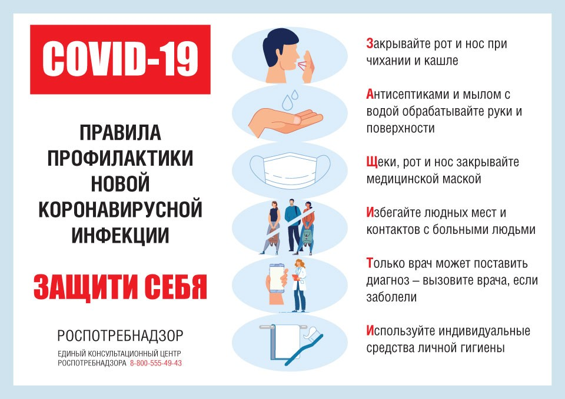

Здравствуйте уважаемые гости нашего сайта!
 Мы рады приветствовать Вас на сайте нашего учреждения.Здесь вы получите полную информацию о деятельности нашего учреждения
и жизни клиентов.Мы рады будем посвятить вас в жизнь учреждения.
Надеемся, что в разделе "Новости" Вы узнаете много интересного из жизни учреждения.
Мы рады приветствовать Вас на сайте нашего учреждения.Здесь вы получите полную информацию о деятельности нашего учреждения
и жизни клиентов.Мы рады будем посвятить вас в жизнь учреждения.
Надеемся, что в разделе "Новости" Вы узнаете много интересного из жизни учреждения.
Краевое государственное бюджетное учреждение социального обслуживания «Дзержинский психоневрологический интернат» (далее – Учреждение)
создано на базе пионерского лагеря «Дружба»
в 1983 году согласно постановлению Красноярского краевого Совета народных депутатов города Красноярска от 30.09.1983 № 940-р.
Функции и полномочия учредителя от имени Красноярского края осуществляет
Министерство социальной политики Красноярского края
Учреждение является юридическим лицом, имеет обособленное имущество, самостоятельный баланс, лицевые счета.
Учреждение стационарное социально-медицинское, предназначенное для постоянного, временного (сроком до шести месяцев)
и пятидневного в неделю проживания и обслуживания граждан пожилого возраста (мужчин старше 60 лет и женщин старше 55 лет) и
инвалидов (старше 18 лет), страдающих хроническими психическими заболеваниями и нуждающихся в постоянном постороннем уходе,
обеспечивающее создание соответствующих их возрасту и состоянию здоровья условий жизнедеятельности, проведение мероприятий
медицинского и социального характера, питание и уход, а также организацию посильной трудовой деятельности, отдыха и досуга.
Дополнительных платных услуг учреждение не оказывает
АНКЕТИРОВАНИЕ. Независимая оценка
Декада качества 2021


Численность сотрудников КГБУ СО «Дзержинский психоневрологический интернат-
97 человек, процент защищенных от новой коронавирусной инфекции составляет 97 %.
Получателей социальных услуг -220 человек , процент защищенных от новой коронавирусной инфекции составляет 98,1%
Горячая линия ОНФ по оказанию помощи пожилым и маломобильным гражданам 8 800 200 34 11
УВАЖАЕМЫЕ ГОСТИ НАШЕГО САЙТА! ДРУЗЬЯ!
Жители учреждения всегда рады общению, поэтому мы открыты для сотрудничества с добровольческими
организациями и физическими лицами, желающими стать добрыми помощниками и друзьями людям с ограниченными способностями.
Наши жители охотно пообщаются, поиграют в настольные игры, послушают стихи, песни. Мы будем благодарны за
оказание помощи при организации для наших жителей концертных программ, выставок, выездных концертов, мастер классов.
Мы рады любой помощи в оказании методической помощи при совместных конкурсах в Грантовых программах.
Наши молодые инвалиды примут помощь от молодежных движений в обучении всех видов танцевальных направлений.
Приходите! Звоните! Пишите!
В последние годы в нашей стране популярно "серебряное" волонтерство. Видеоролики об этом движении можно посмотреть,
пройдя по ссылке https://fexch.rosmintrud.ru/s/ROLIK
Информация о размещении для родственников клиентов нашего учреждения:
Гостиница в с.Дзержинское Гостиница "КОЛОС" расположена в 40 км от нашего учреждения в с.Дзержинское по адресу: с.Дзержинское,
ул.Красноармейская, 90. Контактный телефон: (39167) 9-13-81
Стоимость проживания:
2-х комнатный номер с телевизором и холодильником - 1680 руб.,
1 комнатный номер на два места с телевизором - 900 руб. одно место,
1 комнатный номер на одно место - 350руб.